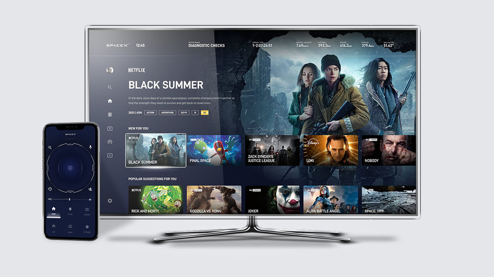

Start With Real References
Rather than designing a science-fiction interface, I wanted the experience to feel grounded in technology that already exists.
The visual language was informed by real aerospace interfaces and operational systems.
Concept Project
A speculative design concept exploring how entertainment, content discovery and personal devices could work aboard future commercial spacecraft.

Overview
As commercial space travel becomes more accessible, entirely new digital experiences will emerge.
This concept explored how a premium entertainment platform might operate aboard a spacecraft travelling between Earth and the Moon. With journeys lasting several days, passengers would need access to films, television, live content and personalised recommendations while operating within a highly unique environment.
The project focused on content discovery, navigation models and companion-device interactions while drawing inspiration from modern aerospace interfaces.
The challenge
Traditional entertainment platforms are designed for homes, mobile devices and aircraft.
Space tourism introduces a completely different context.
The experience needed to consider:
The challenge was creating something that felt believable while still pushing beyond today's entertainment experiences.
My role
I was responsible for the entire concept from research through high-fidelity design.
This included:
Understanding The Problem
Before designing interfaces, I explored products already operating in aerospace environments.
Key sources of inspiration included:
These products provided insight into how information density, typography and interaction patterns could be adapted for a futuristic entertainment platform.
A recurring theme across all examples was clarity, simplicity and confidence.
Approach
Rather than designing a science-fiction interface, I wanted the experience to feel grounded in technology that already exists.
The visual language was informed by real aerospace interfaces and operational systems.
The primary activity would still be content consumption.
Navigation, discovery and recommendations became the foundation of the experience.
A traditional remote control felt inappropriate in this environment.
The concept explored:
as possible alternatives.
Design System
The aesthetic drew heavily from aerospace displays, minimalist industrial design and modern consumer technology.
The typography system was inspired by communication styles used within SpaceX interfaces and supporting materials.
An icon-led navigation system helped reduce clutter while maintaining access to the platform's core areas.
Labels appeared only when needed, allowing the interface to remain clean and focused.
Large content areas were balanced against flight information, system status and discovery features.
Key features
Passengers may want visibility of journey progress without leaving their entertainment experience.
A persistent flight-information layer displayed key mission metrics alongside content.
Operational information became part of the passenger experience.
Large content libraries can be difficult to navigate.
Recommendations would be powered by intelligent personalisation.
Content discovery becomes more relevant during extended journeys.
Passengers may wish to consume content in different ways.
The concept introduced device selection, allowing content to move between available screens and future viewing formats, including VR experiences.
A more flexible entertainment ecosystem.
Logging into shared systems can create friction.
Personal devices could authenticate automatically when brought near the display.
A seamless transition between personal and shared experiences.
Genre filtering doesn't always reflect user intent.
Content could also be explored using emotional or situational filters such as:
and others.
A more human approach to content discovery.
Selected screens
Grid-based browsing experience designed for large content libraries.
Minimal navigation system inspired by aerospace interfaces.
Flexible playback experience supporting multiple devices.
Concept for a dedicated portable input device.
Impact
Although this was a speculative concept, the project demonstrated my ability to:
Perhaps more importantly, it explored how emerging technologies might influence entertainment experiences in entirely new environments.
What I Learned
If I revisited the concept today I would:
Gallery